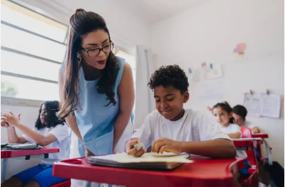
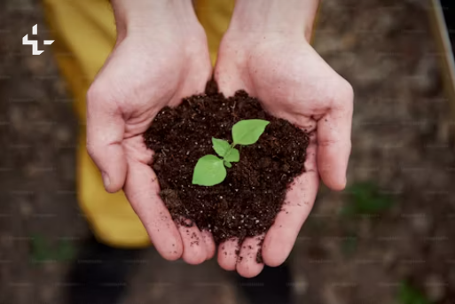
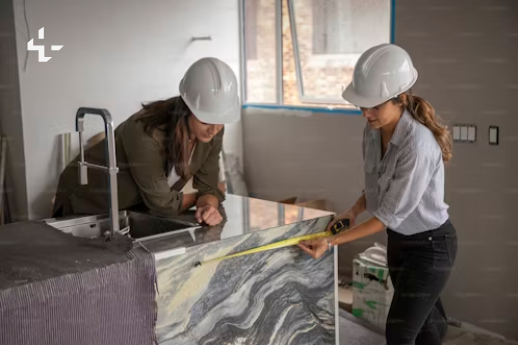

Humanity Haven
At Humanity Haven, we run several programs to address the most pressing challenges in our communities:
Education is a powerful tool that can break the cycle of poverty and create opportunities for a brighter future. At Humanity Haven, we believe that every child, regardless of their background, deserves access to quality education. Through our Education for All program, we provide resources like books, stationery, and scholarships to children in underserved communities. By building learning centers and offering mentorship programs, we empower young minds to dream big and achieve their potential. Education not only shapes individual lives but also strengthens communities, fostering a future built on knowledge, equality, and hope.
We provide free education, books, and resources to children in underserved areas. Through our mentorship programs, we help students realize their dreams.
At Humanity Haven, we are committed to promoting health and well-being in underserved communities. Our Health and Wellness program focuses on providing access to essential healthcare services, including free medical check-ups, vaccinations, and mental health support. We organize health camps where trained professionals offer medical care and educate communities on preventive measures for common diseases. Additionally, we distribute wellness kits containing hygiene products, medicines, and information on healthy lifestyles. By addressing both physical and mental health, we aim to build stronger, healthier communities, ensuring that everyone has the opportunity to live a longer, healthier life.

Our health camps offer free medical check-ups, essential medicines, and health education. We also conduct awareness programs on mental health and hygiene.
At Humanity Haven, we recognize the urgent need to protect our planet for future generations. Our Environmental Sustainability program focuses on creating awareness and implementing actions to combat environmental challenges. We organize tree-planting campaigns, clean-up drives, and workshops on sustainable living practices. By promoting the use of renewable energy, reducing waste, and conserving water, we aim to foster eco-friendly habits within local communities. Our efforts are geared towards creating a cleaner, greener, and more sustainable environment, ensuring that the beauty and resources of our planet are preserved for generations to come.
Through tree-planting drives, clean-up campaigns, and sustainable living workshops, we work towards a healthier planet for future generations.
At Humanity Haven, we believe in the strength and potential of women to drive positive change. Our Women Empowerment program is dedicated to providing women with the tools, resources, and support they need to thrive. We offer vocational training, financial literacy workshops, and mentorship programs to help women build skills and gain economic independence. Additionally, we focus on raising awareness about gender equality and women's rights, empowering women to take leadership roles in their communities. By creating an inclusive environment where women can pursue their dreams, we aim to break down barriers and foster a more equitable and just society for all.
We offer training, financial support, and entrepreneurship programs for women, fostering independence and leadership in their communities.